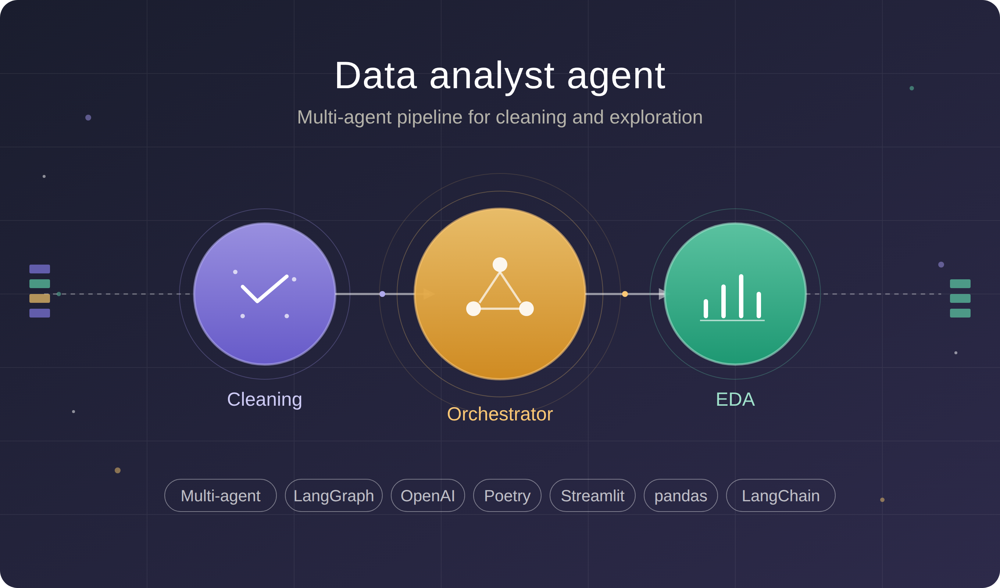
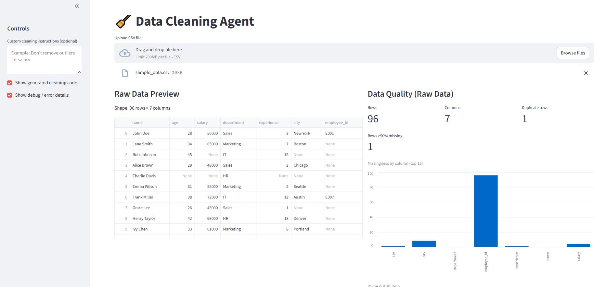
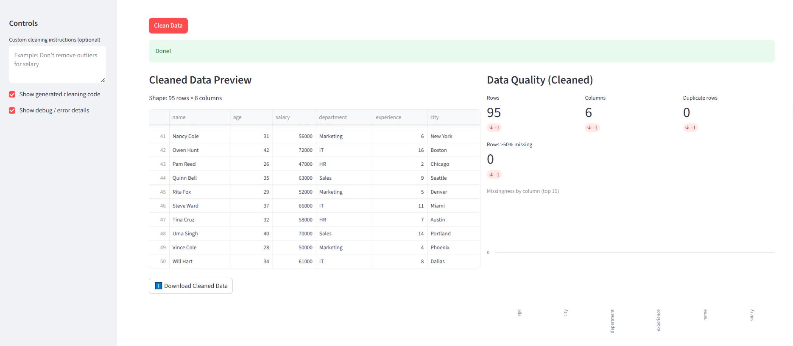
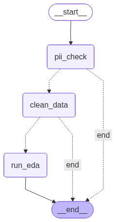

Data Analyst Agent
End-to-end multi-agent system for automated data cleaning and exploratory analysis
Built three LangGraph agents; cleaned data with indicators showing before/after impact, explore the data automatically and run both the agents across an orchestrated pipeline with guardrails.
Overview
Every new dataset starts with the same process: clean the data, understand it and then decide what must be done next. I built an agentic data analysis system which is not just a single script, instead they are divided into three connected pieces:
- Data Cleaning Agent: LLM-driven cleaning with Streamlit dashboard.
- Exploratory Data Analysis (EDA) Agent: automated exploration, synthesizing findings and generating recommendations.
- Orchestrator: a workflow that runs both the agents together with safety checks and fail-safe routing.
Collectively, we get agents with a layer on top of it that makes them work as a single pipeline.
The problem
- Cleaning and EDA are usually separate, which are usually done manually across different tools.
- Trusting that the cleansing process improved the data quality can be harder to perceive without clear before/after feedback.
- Sending sensitive or broken data to an LLM can be risky and wasteful.
- Having one system that runs the steps in order and stops or skips when something does not succeed or is not safe.
What was built
-
Data cleaning agent
- Takes raw CSV files as input and an additional natural-language cleaning instruction (optional).
- LangGraph workflow uses an LLM inside to automate the cleaning process (data types, missing values, outliers).
- Streamlit dashboard to:
- View the pre-cleaned dataset and cleaned dataset with before/after indicators; for instance, missing values reduced, duplicates removed, invalid entries resolved, etc., which shows the impact of the cleaning process and not hidden in a black box.
-
EDA agent
- Runs automated exploratory analysis on cleaned data
- Gives a summary of findings and generates actionable recommendations for next steps
-
Data analyst orchestrator
- Parent LangGraph workflow that chains cleaning → EDA
- Personally Identifiable Information (PII) checks on column names before any LLM call is made (e.g. email, phone, SSN patterns)
- Fail-safe routing:
- Stop the pipeline if PII-like columns are detected.
- Skip EDA if cleaning fails — no analysis will be done on bad or incomplete data
Full pipeline: Raw CSV → Sensitive-column check → Clean → Explore → Summary + recommendations
How it works
- Input: Upload a CSV file and add additional instructions on how to clean (optional).
- Guardrail: Orchestrator scans column names for PII-like patterns. If flagged, the pipeline ends before passing it to the LLM model.
- Cleaning: Cleaning agent processes the data. Use Streamlit to inspect cleaned rows and before/after metrics (e.g. fewer nulls after cleaning).
- Routing: Orchestrator checks if the cleaning process is successful. If not, the EDA process is not triggered.
- EDA: EDA agent analyzes the cleaned dataset and returns a summary of the findings; based on those findings, recommendations are generated.
- Output: Cleaned data, EDA summary and recommendations, and any PII flags from the guardrail step.
Data Cleaning Agent Dashboard


EDA Agent Output
Example output when the EDA agent runs on a 9,741-row café transactions dataset — the agent profiles the data, checks for missingness, computes aggregates, surfaces relationships, and synthesises findings into actionable recommendations.
View sample EDA output
============================================================
DATASET PROFILE
============================================================
shape: {'rows': 9741, 'columns': 6}
columns: ['Transaction ID', 'Item', 'Quantity', 'Price Per Unit', 'Total Spent', 'Transaction Date']
dtypes: {'Transaction ID': 'object', 'Item': 'object', 'Quantity': 'float64', 'Price Per Unit': 'float64', 'Total Spent': 'float64', 'Transaction Date': 'object'}
numeric_distribution: dict with 3 items
numeric_columns: ['Quantity', 'Price Per Unit', 'Total Spent']
categorical_columns: ['Transaction ID', 'Item', 'Transaction Date']
numeric_summary: dict with 3 items
categorical_summary: dict with 3 items
Observations:
• The dataset contains 9741 transactions with an average quantity of approximately 3 items per transaction, indicating a consistent purchasing behavior among customers.
• The most frequently purchased item is juice, with 1499 transactions, while there are notable occurrences of 'unknown' and 'error' items, which may require further investigation.
============================================================
MISSINGNESS ANALYSIS
============================================================
total_rows: 9741
missing_count: {'Transaction ID': 0, 'Item': 0, 'Quantity': 0, 'Price Per Unit': 0, 'Total Spent': 0, 'Transaction Date': 0}
missing_percentage: {'Transaction ID': 0.0, 'Item': 0.0, 'Quantity': 0.0, 'Price Per Unit': 0.0, 'Total Spent': 0.0, 'Transaction Date': 0.0}
high_missing_columns: {}
complete_rows: 9741
complete_rows_pct: 100.0
Observations:
• There are no missing values in any of the columns, indicating a complete dataset with 9741 rows.
• The dataset is fully populated, which is beneficial for analysis as it ensures that all variables are available for insights without the need for imputation.
============================================================
AGGREGATES ANALYSIS
============================================================
group_by_columns: ['Item']
aggregates: dict with 1 items
Observations:
• Juice is the most popular item with 1499 purchases, followed closely by coffee and cake, indicating a strong preference for beverages and desserts.
• The maximum price per unit for juice and salad is the highest at $5.00, suggesting these items may be premium offerings, while coffee and cake are more affordable at $3.00 and $3.00 respectively.
============================================================
RELATIONSHIPS ANALYSIS
============================================================
numeric_numeric_correlation: [{'feature_col1': 'Quantity', 'feature_col2': 'Total Spent', 'correlation': 0.6546}, {'feature_col1': 'Price Per Unit', 'feature_col2': 'Total Spent', 'correlation': 0.5785}]
numeric_categorical_mean_range: [{'numeric_feature': 'Quantity', 'categorical_feature': 'Item', 'mean_range': 0.5285373385738352, 'relative_mean_range': np.float64(0.17752162661360352)}, {'numeric_feature': 'Price Per Unit', 'categorical_feature': 'Item', 'mean_range': 3.7670329670329674, 'relative_mean_range': np.float64(1.2983058761960882)}, {'numeric_feature': 'Total Spent', 'categorical_feature': 'Item', 'mean_range': 8.936996336996337, 'relative_mean_range': np.float64(1.057722011781632)}]
Observations:
• There is a strong positive correlation (0.6546) between Quantity and Total Spent, indicating that as the quantity of items purchased increases, the total amount spent also tends to increase significantly.
• The mean range for Price Per Unit across different items is notably high (3.77), suggesting that there is considerable variation in pricing among the items, which could influence purchasing behavior.
============================================================
FINAL SYNTHESIS
============================================================
Summary:
The analysis reveals a consistent purchasing behavior among customers, with juice being the most popular item, followed by coffee and cake. A strong positive correlation exists between quantity purchased and total spent, indicating that higher quantities lead to increased spending, while significant price variation among items suggests potential influences on purchasing decisions.
Recommendations:
• Investigate the occurrences of 'unknown' and 'error' items to understand their impact on sales and customer experience.
• Consider promotional strategies for juice, coffee, and cake, as they are the top-selling items, to further boost sales.
• Analyze customer segments based on purchasing behavior to tailor marketing efforts and product offerings more effectively.
• Explore pricing strategies for premium items like juice and salad to maximize revenue while maintaining customer interest.
Pipeline flow

Technical highlights
- Three LangGraph agents: two task-specific (data cleaning agent, EDA agent) and one parent orchestrator.
- Multi-agent composition: sub-agents invoked as nodes; orchestrator handles flow, integration, and routing.
- Pre-LLM privacy guardrails: sensitive-column detection before data reaches models.
- Fail-safe pipeline behavior: hard stop on PII; skip EDA on cleaning failure.
- Streamlit before/after metrics: makes cleaning impact transparent and verifiable.
- Modular design: cleaning and EDA agents can work as standalone processes or inside the full pipeline.
Tech stack
Python · Poetry · pandas · LangGraph · LangChain · OpenAI · Streamlit · python-dotenv · LangSmith
Outcomes
A reusable agentic data analysis stack you can use in parts or as a whole:
- Run cleaning alone and validate the impact in Streamlit.
- Run EDA Agent on cleaned data and get a summary of findings and recommendations.
- Or run the full pipeline from raw CSV to recommendations, with guardrails that reflect how you’d possibly handle real datasets.